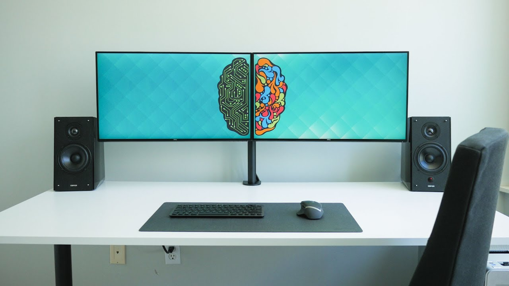

Ergonomic workstation
A clean Ergonomic minimal, yet functional desks and simple workspaces. Very comfortable and yet powerful desk setup. Dual monitor setup will boost your work speed significantly. This setup is perfect for web developer, software developer or any people who loves clean desktop yet powerful and ergonomic.